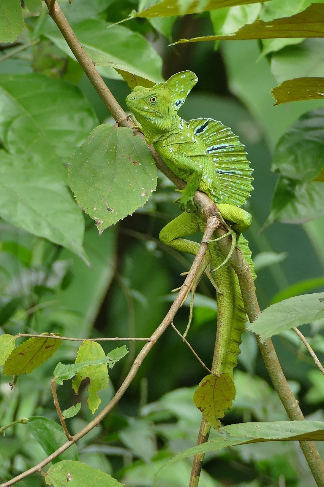

2-Vive cerca de ríos y selvas en Centroamérica.
3-Tiene una cresta en la cabeza y espalda, más grande en los machos.
4-Es omnívoro, come insectos, pequeños vertebrados y plantas.
5-Es muy rápido y buen nadador para escapar de depredadores.